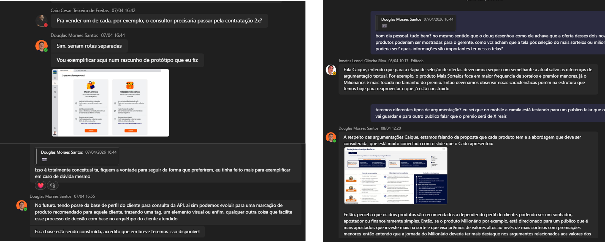
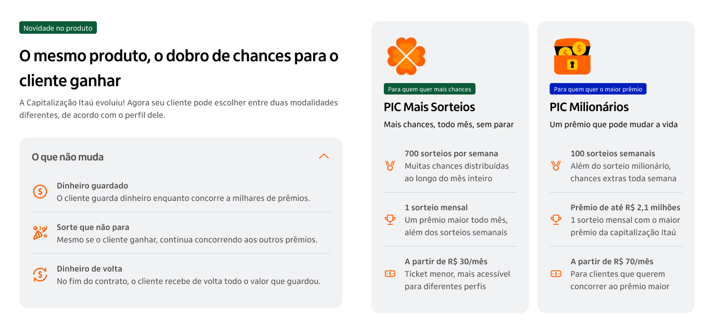
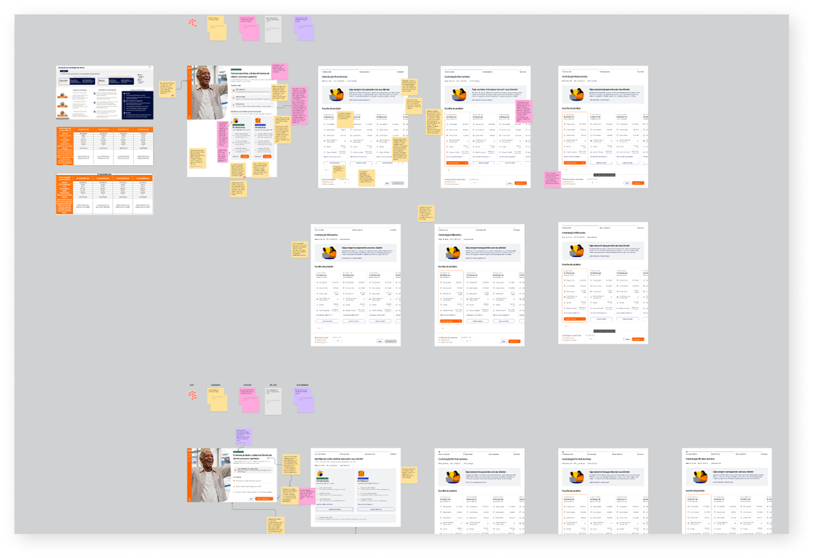
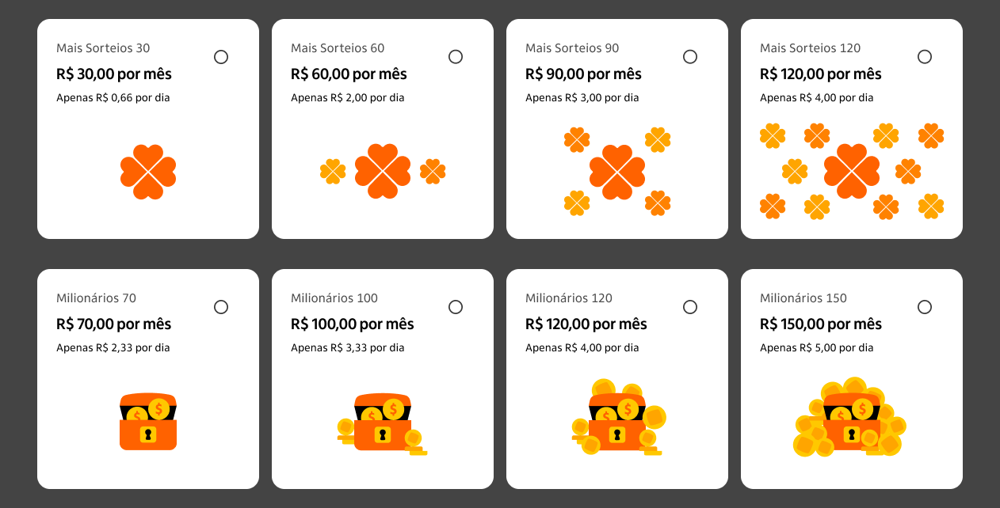
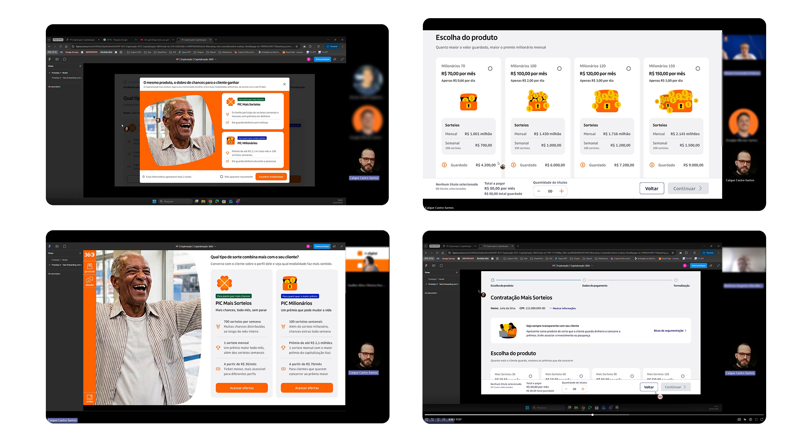
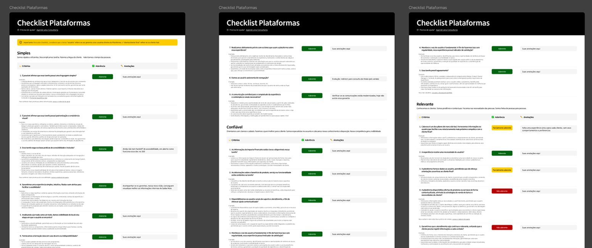
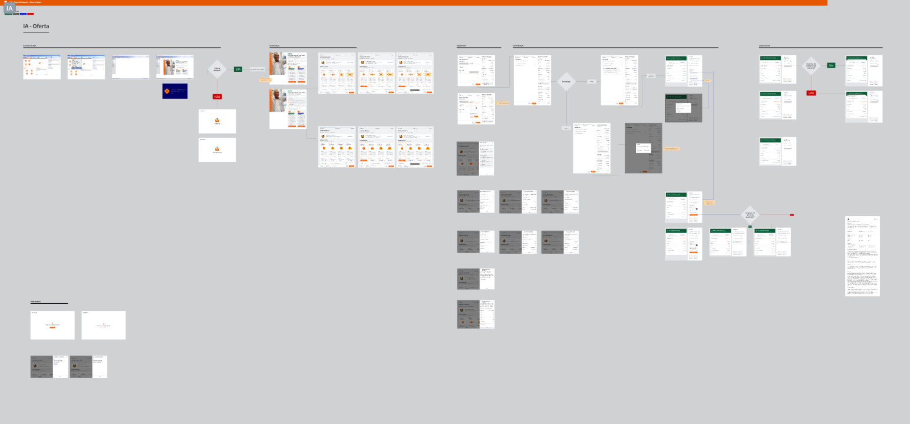

One product, two categories: how I redesigned Itaú's capitalization journey without disrupting the banker's routine
In less than a month, I had to fit two new products into a journey bankers already knew by heart. The challenge wasn't just design — it was explaining the change without creating anxiety, and without adding friction to a workflow where every second counts. I delivered a validated prototype, ran 4 usability tests, and left with a 5/5 confidence rating from the bankers themselves.
- Itaú's capitalization product went through a structural change. The single contracting tier was replaced by two products with different profiles: PIC Mais Sorteios and PIC Milionários.
- I was brought in to redesign the contracting journey used by relationship bankers to serve clients in-branch.
- The main challenge wasn't technical. It was communicational: how to explain a product change to bankers who already know it inside out, without creating anxiety and without adding friction to a workflow that needs to stay fast.
- In three weeks, I ran an async co-creation with Business and Tech, built initial versions on top of the existing journey, and facilitated a multidisciplinary critique.
- I conducted four moderated usability tests with relationship bankers. The single-page layout was chosen as the final solution.
- All bankers were able to independently understand the difference between the products and gave a 5/5 confidence rating to use the flow with a real client.
The product changed. The banker's routine couldn't.
Itaú already had a capitalization journey in its internal platform, used daily by relationship bankers to serve clients face-to-face. In this flow, the banker presents the product, selects a value tier, and completes the contract. It’s a familiar and well-established process. The product had a single tier, which made it straightforward to explain and easy to sell.
This changed when Itaú restructured the offering. The single tier was replaced by two products with distinct profiles and value propositions: PIC Mais Sorteios and PIC Milionários. This shift needed to be communicated clearly, without creating anxiety. Bankers already understood the previous product, so they now had to quickly grasp what changed, what stayed the same, and how to position two options to clients. At the same time, the new journey couldn’t add complexity to a flow that needs to remain fast.
The context made this even more critical. Bankers operate face-to-face, often under time pressure, and capitalization is just one of many products they offer. The faster the flow, the more opportunities they have throughout the day. Any friction, such as extra steps, unclear information, or poorly placed actions, directly affects both productivity and the client experience.
This led to a central question: how do you communicate a product change without making the process feel more complex?
My role was to lead the design of this journey end to end, from planning and alignment with Business and Technology to prototyping, iteration, usability testing with real bankers, and validation through Itaú’s experience quality checklist.
Three weeks, four stages.
With roughly a month to deliver a validated prototype and complete the handoff for development, I started by defining a clear roadmap with well-established entry criteria. Before designing any screen, I needed the business rules for each product to be formalized, co-creation sessions aligned with Business, BT, and Technology, and full access to iDS, Itaú's design system, secured from day one.
I facilitated a workshop with Business, Technology, and Design to map the new products and define how they would integrate into the existing journey. This included mapping the current flow, building a screen inventory, and identifying the banker's key decision points.
I created user flows for each product in Figma, following iDS guidelines. The flows were validated with Business before moving into high-fidelity screens. I then presented the work and gathered structured feedback from stakeholders.
I conducted moderated usability tests with Itaú relationship bankers. The sessions included applying Itaú's journey quality checklist, as well as documenting and prioritizing findings based on impact.
I refined the solution based on test insights and delivered a complete handoff to the tech team, including behavior specifications, component states, and detailed business rule annotations.
A co-creation that happened in the chat.
With a tight deadline, the co-creation didn’t follow the traditional format of in-person workshops. Instead, it unfolded asynchronously on Microsoft Teams, where we explored solution paths, defined argument differentiation for each product, and shaped the presentation logic directly in the chat. Screenshots, sketches, and references were shared in real time, allowing decisions to move forward without blocking on meetings.

Async co-creation on Microsoft Teams — decisions moved forward without blocking on meetings
Despite the unconventional format, the Business team’s engagement generated insights that directly influenced the final design decisions. The most relevant definitions from this stage were:
Each product has a distinct core argument. PIC Mais Sorteios should emphasize volume and frequency, highlighting 700 weekly draws as its main hook. PIC Milionários should focus on prize size, leading with up to R$ 2.1 million every month as the dominant element. This distinction in narrative needed to be clear from the very first screen the banker interacts with.

Product argument differentiation: Mais Sorteios leads with volume and frequency, Milionários with prize size
The change shouldn’t feel like a disruption. Bankers already understand how the capitalization product works, so the new journey needed to reinforce what remained the same, such as saving money, participating in draws, and receiving the full amount back at the end, before introducing what had changed.
From hypothesis to tested solution.
With the business direction defined, I built on top of the existing journey instead of starting from scratch. I introduced targeted adjustments to create quick, testable versions. The goal was to give the team something concrete to react to, not a final solution.

Existing journey: the starting point used by relationship bankers before the product restructuring
In a multidisciplinary critique with Design, Business, and Technology, two directions emerged. A single-page layout consolidated all information and actions in one place to reduce steps. A modal introduced the new products before the flow, leveraging a familiar interaction pattern.

Multidisciplinary critique with Design, Business, and Technology — two directions emerged for testing
Both directions were tested. The single-page layout was selected for being more practical, with all information and actions accessible without interruption. The modal was discarded due to added friction and misalignment with the platform's technical direction. A variation with CTAs inside the modal was also ruled out, as it introduced decisions before bankers fully understood the products.
Modal direction: introduced the new products before the flow — discarded due to added friction
Single-page direction: all information and actions in one place — selected as the final solution
For the offer page, I focused on differentiation. Shared information was consolidated outside the cards, while each card emphasized draws and total saved, the key metrics for the sales pitch.
Offer page: shared information consolidated outside cards, each card highlighting draws and total saved
The illustration concept reinforced value progression across tiers. Inspired by in-game purchase patterns, visuals scale with each product, making differences intuitive at a glance while adding dynamism to the experience.

Illustration concept: visuals scale with each product, making differences intuitive at a glance
What the bankers told me.
I conducted four moderated remote usability tests with Itaú relationship bankers, all familiar with the capitalization product. Each session lasted around 30 minutes and followed a structured script covering layout preference (single-page vs. modal), understanding of the tiers, clarity of the offer cards, and perception of the illustrations.

Moderated remote usability tests with Itaú relationship bankers — 4 sessions, 30 minutes each
Key findings
- Clear differentiation between products. All bankers were able to distinguish between Mais Sorteios and Milionários without any guidance and correctly matched each one to the appropriate client profile.
- "Only R$ X per day" stood out immediately.This was the most praised element across sessions. Bankers reacted spontaneously and mentioned they already use this argument in practice. Making it visible on screen proved effective.
- Single-page confirmed as the most practical solution.Even those who initially preferred the modal recognized the advantage of having all information and the action in one place, with no intermediate steps.
"Before, it was unclear if the 4 million was weekly, monthly, or yearly. Now it's much more informative." — Viviam, Relationship Banker, Digital Branch
"For me, it's a 5. Every second we save is another opportunity to do business." — Suellen, Relationship Banker, Digital Branch
Itaú's journey quality checklist.
Before any delivery goes into production at Itaú, it goes through an experience quality checklist. This is a multidisciplinary review where Design, Business, and Technology evaluate the journey against a set of criteria based on experience pillars, rating each one as compliant, partially compliant, or non-compliant.
I submitted the capitalization journey with all stakeholders involved, and the result was fully compliant across all criteria.

Experience quality checklist: fully compliant across all criteria
What I delivered and what it left behind.
At the end of the cycle, I delivered a validated prototype covering the full contracting flow for both products, from the explanatory entry point to the development handoff, with all behavior specs, states, and business rules documented in Figma.

Development handoff: behavior specs, component states, and business rules documented in Figma
Testing confirmed the approach worked. Every banker understood the difference between the products independently, mapped each one to the right client profile, and gave maximum confidence to use the flow with a real client.
Launch is scheduled for July 2026, starting with a pilot in selected branches before scaling across the network.
What I would bring to the next project
What this project reinforced is that good design under constraints is about focus. It’s about solving the right problem in the best possible way within the time available, not trying to reinvent everything.
As a senior designer, the role is to be pragmatic. You don’t have all the answers, so you bring in the people who do. Design, Business, and Technology each see the product from a different angle, and the best solutions come from combining those perspectives, not from working in isolation.
It also means being objective in decision-making. If something doesn’t work, you move on. If it works, you double down. The goal is not perfection, it’s reaching the best possible outcome with the time and context you have.